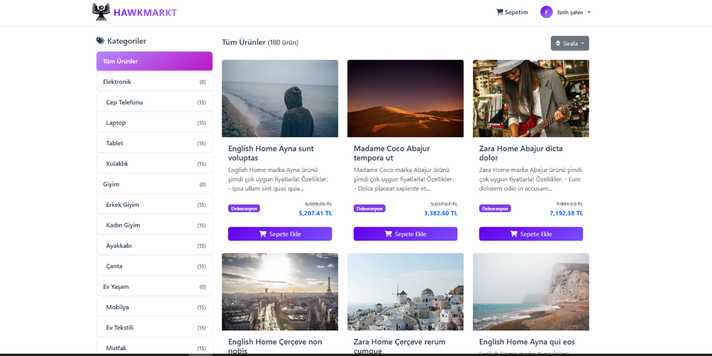
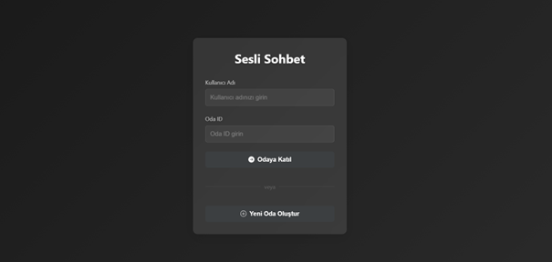
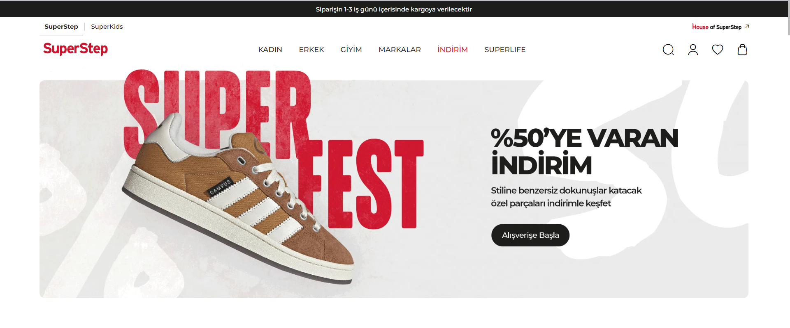

Featured Works
A collection of my recent projects

HawkMarkt
A comprehensive description of the project, highlighting key features and technical achievements.

Voice Chat Application
A comprehensive description of the project, highlighting key features and technical achievements.

SuperStep Clone
A comprehensive description of the project, highlighting key features and technical achievements.